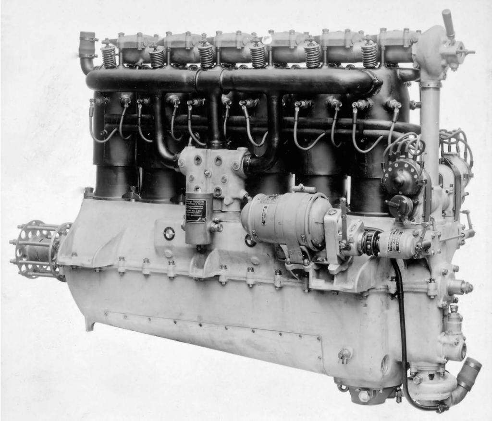
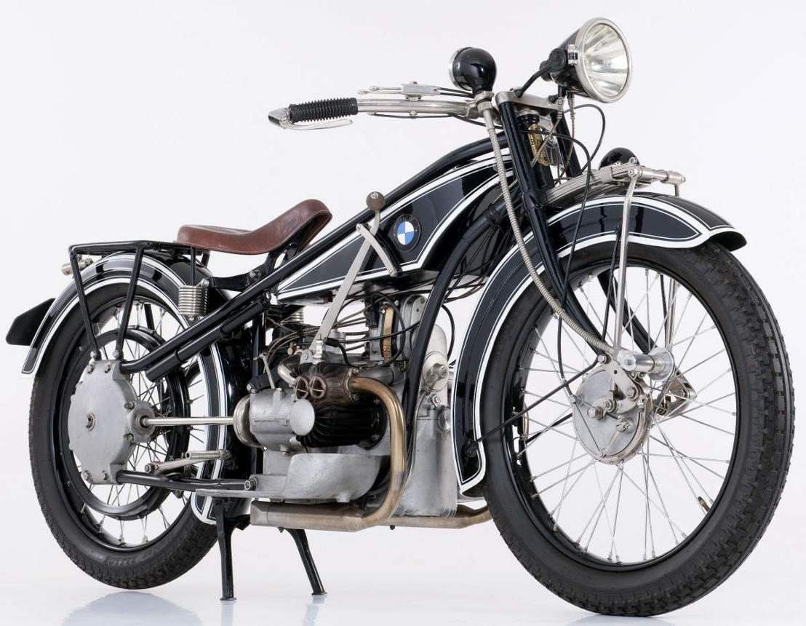
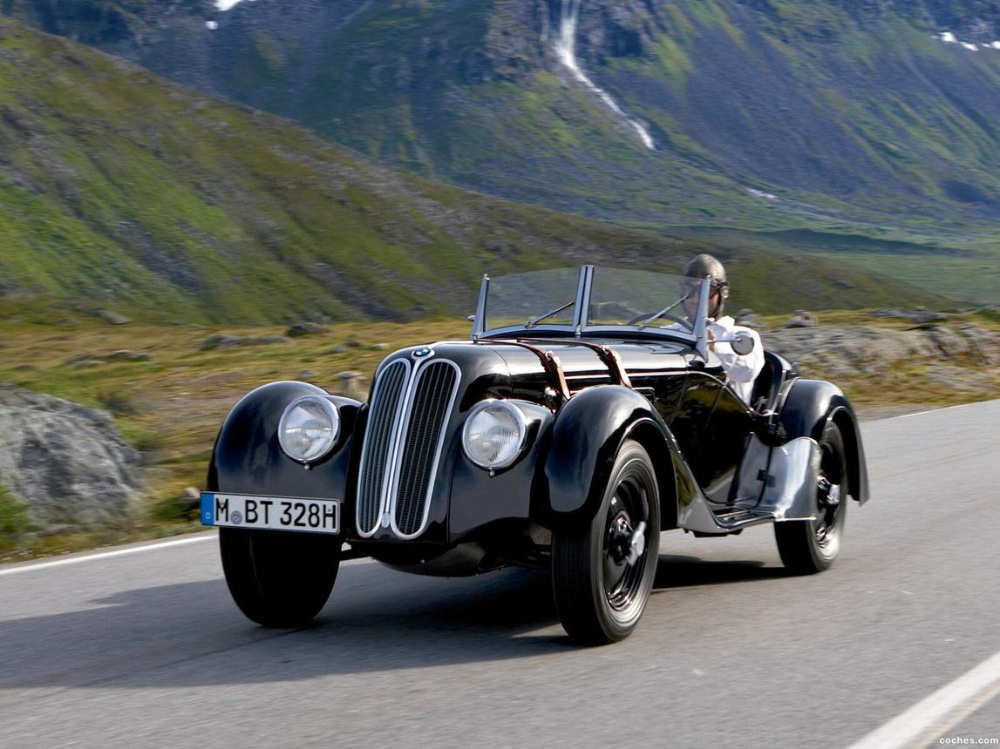
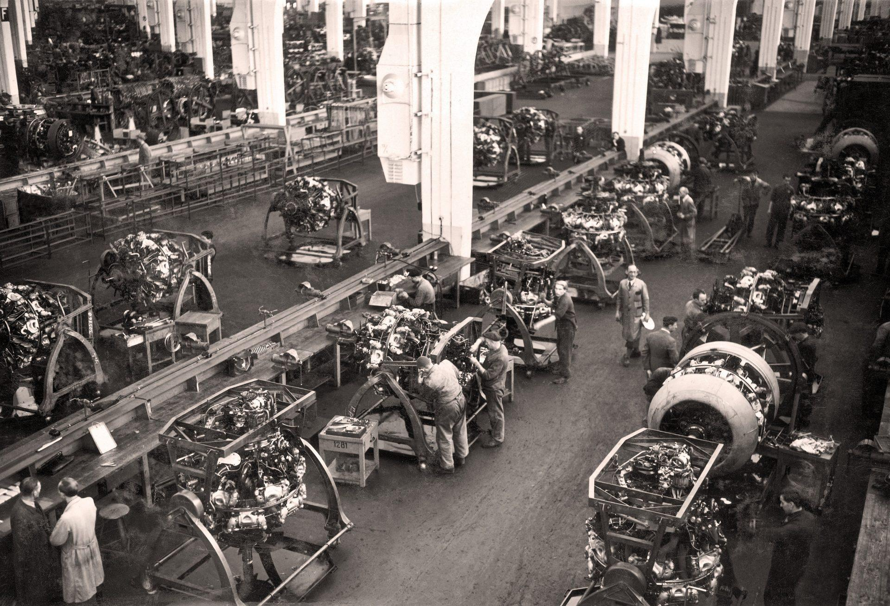
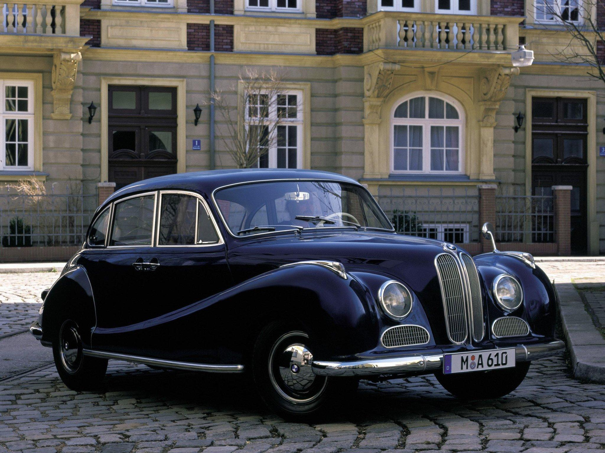
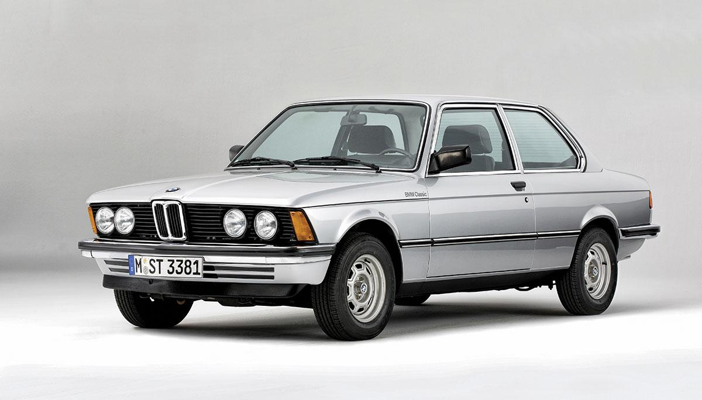
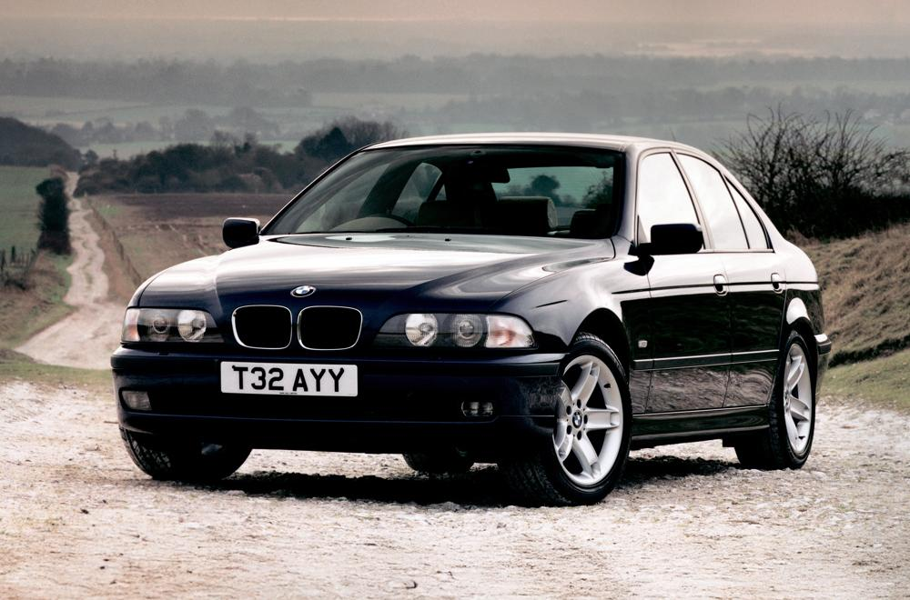
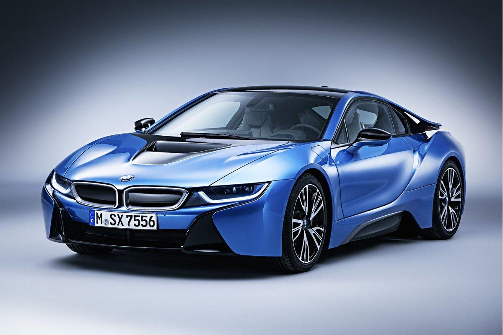
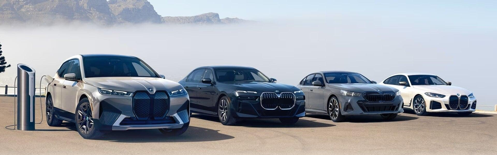
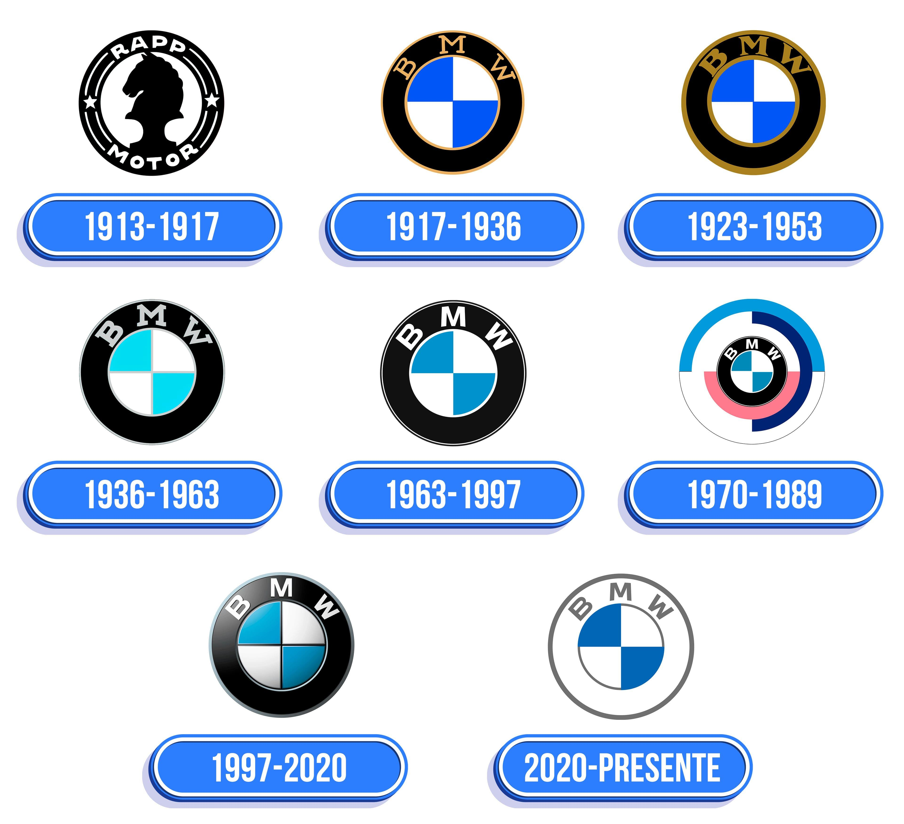

L'histoire de BMW commence le 7 mars 1916 à Munich, en Allemagne. À l'origine, l'entreprise ne fabriquait pas de voitures, mais des moteurs d'avion destinés à l'aviation allemande pendant la Première Guerre mondiale. Son nom signifie Bayerische Motoren Werke, c'est-à-dire « Usines bavaroises de moteurs ».
Le premier grand succès de BMW est le moteur d'avion BMW IIIa, réputé pour sa puissance et sa fiabilité.

À la fin de la guerre, le traité de Versailles interdit à l'Allemagne de fabriquer des moteurs d'avion. BMW doit alors se réinventer. L'entreprise produit successivement :
En 1923, BMW présente sa première moto, la R32, qui connaît un immense succès grâce à son moteur bicylindre à plat (boxer), une architecture encore utilisée aujourd'hui.

En 1928, BMW rachète l'usine d'Eisenach et lance sa première automobile : la BMW 3/15, dérivée de la Dixi. Durant les années 1930, la marque développe des voitures plus sportives et plus luxueuses. En 1936, elle présente la légendaire BMW 328, une voiture de sport qui remporte de nombreuses compétitions et fait connaître BMW dans le monde entier.

Pendant la guerre, BMW revient principalement à la fabrication de moteurs d'avion pour l'armée allemande. L'entreprise participe à l'effort de guerre du régime nazi et utilise également du travail forcé dans certaines usines, comme beaucoup d'industries allemandes de cette époque. À la fin du conflit, plusieurs usines sont détruites ou fermées, et BMW se retrouve dans une situation très difficile.

Après la guerre, BMW ne peut plus produire immédiatement des voitures. L'entreprise fabrique alors des vélos, des casseroles et divers objets métalliques pour survivre. En 1948, la production de motos reprend. En 1952, BMW lance la BMW 501, une berline de luxe. En 1955, la petite Isetta, surnommée « voiture-bulle », connaît un grand succès et aide l'entreprise à survivre. Malgré cela, BMW est proche de la faillite en 1959. L'investisseur Herbert Quandt rachète une part importante de l'entreprise et évite son rachat par Daimler-Benz. Cette décision sauve BMW.

Les années 1960 marquent le véritable renouveau de BMW. La gamme Neue Klasse est lancée avec des berlines modernes, sportives et fiables. Elles définissent l'identité de BMW : le plaisir de conduire. Durant les années 1970 apparaissent :
En 1972, BMW crée également sa division sportive BMW M, qui produira plus tard des modèles mythiques comme les M3 et M5.

BMW devient l'un des plus grands constructeurs automobiles haut de gamme. Ses voitures sont réputées pour :
En 1994, BMW rachète le groupe Rover. L'opération est un échec financier, mais BMW conserve la marque MINI. En 1998, BMW obtient les droits sur la marque Rolls-Royce, dont il devient le constructeur à partir de 2003.

BMW développe :
En 2013, la marque lance la BMW i3, l'une des premières voitures électriques premium produites en grande série, ainsi que la sportive hybride i8, symbole de l'innovation de BMW.

Aujourd'hui, BMW est l'un des leaders mondiaux de l'automobile premium. Le groupe possède quatre grandes marques :
L'entreprise investit massivement dans :
Depuis 2025, BMW a lancé les premiers modèles de la nouvelle génération Neue Klasse, qui doivent représenter l'avenir de la marque avec des véhicules 100 % électriques, plus efficaces et plus connectés.

